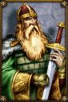

Récits Légendes de Kirin Tor Personnages Célébrités Guildes
Outils Calendrier Calendrier Illustré Mod d'interface
Informations Historiens FAQ Liens Crédits
Les légendes de Kirin Tor
Kusato
Mail : ==> Afficher les personnages de Kusato
kusato
 Age : 45
Age : 45
Sexe : Homme
Race : Nain
Faction : Alliance
Formation : Voleur
Description : Je suis né dans l'auberge qui appartient à mes parents depuis toujour, je suis né dans la cave et la premiére odeur que j'ai sentit fut celle de la biére, cette odeur me suivra d'ailleur tout au long de ma vie...J'ai passé mon enfance dans cette même auberge avec mon frére helvarg, et notre jeunesse fut bercé par les contes des anciens rois nains que nous racontais notre pére, ces histoires me passioné plus que tout et tout jeune déja je juré de devenir comme l'un de ces seigneurs. Puis mon frére partit s'engager comme montagnard a Ironforge et pour tuer le temps, j'aider mes parents a la taverne, c'est là que j'appris l'art du vol, du lancer de couteau et du combat. L'ambiance de la taverne me plaisait particulierment et très vite je m'y fit ma place. Mais les bonnes choses ont une fin, et mes parents, voyant que je devennais assez robuste pour affronter le monde exterieur, m'envoyère par delà les montagnes pour rejoindre mon frére, se que j'aurais fait bien volontier; mais mon coeur me disait que j'étais fait pour une autre vie que celle de montagnard, et je décida ainsi de me cacher dans les montagnes pendant 3 ans pour me perfectionner au combat.
C'est ainsi que se déroula mon enfance, après ces 3 années sabattiques, j'alla a Ironforge pour voir mon frére mais on m'appris qu'il avait été capturé par une troupe de mort vivant, dieu seul savait se qu'il lui était arrivé ensuite. J'érrais donc dans Ironforge attristé par cette funeste nouvelle quand un tunnel m'intriga particuliérement, je penetrais à peine a l'interieur qu'un gnome me poussa en avant en me criant que j'étais en retard. j'atterit dans une nacelle metallique, et quand je resortit, je me trouver dans un tout autre endroit: Stormwind.
L'ambiance et la gaieté de cette ville m'envouta, et je décida que c'était ici que je ferrais fortune! Mais arrivé sans le sou dans cette ville, la réalité m'apparut assez vite; je finirais mendiant tout au plus. Et c'est la que j'ai rencontré un compatriote nain, nommé Rumwald qui m'aida, qui m'offrit le gîte et le couvert. Nous devînmes ami, et avec lui, j'eu pour idée d'ouvrir..... une maison de jeu!
L'histoire s'arréte là, la suite... c'est le destin qui nous la dira!
quoi qu'il en soit, excuser moi pour la qualité médiocre de l'écriture...
si vous passer dans stormwind, venez jeter un coup d'oeil dans ma maison de jeux =) je posterais un message sur le forum pour indiquer le lieu exacte et les horaires d'ouvertures.
svp aider nous a faire marcher la seul maison de jeu de kirin tor !
perder autant de sou qu'il vous plaira chez nous, nous sommes la pour sa!
Plus d'infos sur kusato >>>
Lire les 3 récits de kusato >>>